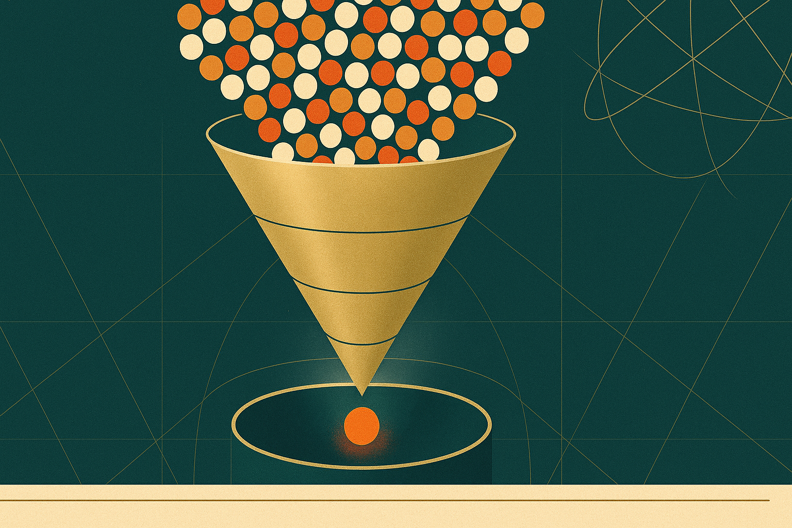

Innovation is not random, but it is luck-dependent — and luck is farmable. The job of a serious operator is not to summon weather; it is to build the apparatus that catches it. The waitlist, the closed alpha, the private and public betas: these are not stages on a marketing calendar. They are screens of progressively finer mesh, each one tuned to a different signal, each one promoting only the cohorts that earn the doubling and freezing the ones that don't.1
This is the central doctrine and it sits behind every decision downstream. Every gate, every metric, every cohort ladder exists for one purpose: to increase the number of shots we take while sharpening the instrument we use to hear when one lands. Treat each promotion as a programmatic function of the numbers and not the room, and most of the failure modes of growth-stage product simply stop happening. The political launches die first.
§ 02.01The doctrine, briefly
Two commitments precede every cohort. The first is programmatic gating: before we open the door, we write down the numbers that will permit doubling, the numbers that will force freeze, and the numbers that will trigger rollback. The second is customer-driven shape: what users do with the product overrides what we thought we were building. From the moment a stranger touches it, the customer is a co-pilot — not a co-decider.
Together these commitments make a sieve. The waitlist is the coarsest screen — interest, not intent. The Alpha is the second screen — Hook validation through founder-led interviews and Sean Ellis 40%.2 The Private Beta is the third — Legs, retention cascades, the smile curve, the surprise use case. Public Beta is the fourth — Flywheel, Bass diffusion, the word-of-mouth coefficient. By the time a product reaches GA it has survived four progressively harder questions, each pre-committed in writing.
Apparatus, not weather
The temptation in every promising cohort is to declare victory at the first encouraging chart. The discipline is the opposite. A gate is binding; a metric is observed before it is interpreted; a freeze is a feature, not a failure.
You don't make lightning. You build the apparatus that catches it.
§ 02.02Inline figure — the observation grid
A waitlist is a measurement instrument before it is a marketing tool. The shape of the curve — its decay slope, its referral coefficient, the geographic and persona clustering of its top decile — tells you what the Alpha cohort should look like before you have written its first invitation email.

§ 02.03Gate metrics, written down first
The table below is illustrative, not prescriptive. Numbers are tuned to category, surface, and clock speed; what matters is that they exist on paper before the cohort opens, that they are read weekly, and that the team has agreed in advance what each band means. The point of the table is not the numbers — it is the act of writing them down.
| Metric | Floor | Promote | Action |
|---|---|---|---|
| D7 retention | ≥ 22% | ≥ 38% | Double cohort; widen funnel two notches. |
| Activation (first key action) | ≥ 55% | ≥ 75% | Promote onboarding; revisit empty-state. |
| Support tickets / DAU | ≤ 4.0% | ≤ 1.5% | Freeze if exceeded two consecutive weeks. |
| NPS (rolling 30-day) | ≥ 28 | ≥ 50 | Thermometer, not a gate. Read for trend. |
| Sean Ellis PMF | ≥ 30% | ≥ 40% | Below floor: kill or pivot, do not scale. |
Promotion as a function
The gate is implemented in code, not in a meeting. The function below is pseudocode, but the discipline it encodes is real: pre-commit thresholds, read weekly, let the numbers decide. The role of the operator is to set the thresholds — not to override them.
01 02 03 04 05 06 07# gate.py — promotion function for cohort N → N+1 def promote(cohort): m = cohort.metrics(window="7d") if m.d7 >= 0.38 and m.act >= 0.75 and m.tix <= 0.015: return "DOUBLE" if m.d7 < 0.22 or m.tix > 0.04: return "FREEZE" return "HOLD"
Promotion from one stage to the next is a function of metrics, not meetings. Our job is to set direction and then refuse to override the gate.
§ 02.04Order of operations
For an operator opening a cohort this week, the sequence is fixed. Everything else is taste; the order is doctrine.3
- Write the gate. Floors, promotes, kill criteria — on paper, signed.
- Open the waitlist. Measure shape before you measure size.
- Run founder-led interviews on the first ten Alpha invites; read the replays.
- Promote programmatically. Freeze without ceremony when the numbers say so.
- The waitlist is a sieve, not a lottery.
- The Alpha is a Hook test, not a polish exercise.
- The Private Beta is the retention cascade, not the press cycle.
The remainder of this chapter takes each stage in turn — waitlist, Alpha, Private Beta, Public Beta — and works through the doctrine, the gate, and the failure modes. The reader who finishes will not be guaranteed a hit. They will be guaranteed an apparatus capable of catching one.